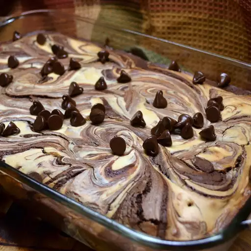

Cheesecake Brownies

description
These cheesecake brownies are a jazzed-upversion of an out-of-the-box brownie mix with an easy cheesecake topping.
Ingredients
- 1 (18.25 ounce) package brownie mix
- 3 tablespoons water
- ½ cup vegetable oil
- 2 large eggs
brownie mix
- 1 (8 ounce) package cream cheese
- 1 large egg
- ⅓ cup white sugar